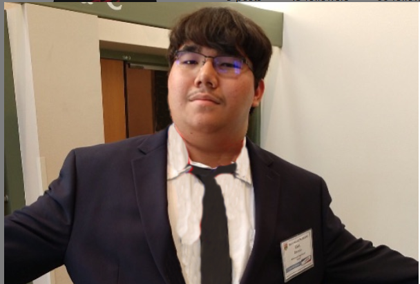

About Us
Learn About Our Buisness
Frequently Asked Questions
Question: What are the prices of the packages?
Answer: The prices can be found on our services section. For a more exact price, contact us to set up a consulation for a quote.
Question: Why might my company need an audit?
Answer: You may want an audit to ensure against fraud and to make sure that all financial statements adequately represent the financial condition of the company. The Securities and Exchange Commission requires an annual audit for all publicly traded companies. However if your company is not publicly traded, your bank may require audited financials in order to obtain a loan.
Question: Should I keep old tax returns?
Answer: You should generaly keep tax returns for 7 years.
Our Team
Robert LeDuc
Chris Castellanos
Carl Zelinski
Founder/CEO
Robert was born in and grew up in Arizona. Due to various health complications from birth Robert was incapable of spending long periods of time outside, and as such he grew up surrounded by computers. When he attended Millennium High School he met Chris Castellanos. After graduating from Millennium High School he immediately went to college, attending University of Michigan he Majored in Computer Science and minored in Business Law. It was there that he met Chris Castellanos once again and subsequently they came together to come up with the idea of Accuracy Accounting. Accuracy Accounting was officially founded during the year 2007, despite a slow start due to the recession of 2008 Accuracy Accounting started to quickly grow in scope as their reputation as a trustworthy and affordable accounting service grew.
CO-Founder
Chris Castellanos Chris was born in Florida, when he was only six he moved across the country to Arizona. Due to his mother being an accountant he learned the skills necessary early in life. Moving across the state often from the time between he moved to Arizona and High School the only thing he made a lasting connection with was computers. When he attended Millennium High School he met Robert LeDuc. After High School he attended New York University where he Majored in Computer Science and minored in Accounting. It was online that he restarted contact with Robert LeDuc and together they founded the idea of Accuracy Accounting.
Head of RnD
Carl was born in Arizona and attended Millennium High School with Robert LeDuc and Chris Castellanos. When he graduated he was admitted into MIT. During the year 2007 he was contacted by Robert LeDuc who offered him the job as Head of RnD for Accuracy Accounting. So far under his tenure Accuracy Accounting has developed advanced software to help aid in the accuracy of our accounting work.
Our History
Our Buisness was founded in 2007 in Phoenix AZ by Robert LeDuc and Chris Castellanos. They founded the company under one principle, precision. Robert LeDuc is still our CEO and has been since the founding. The company grew slowly, and gained 60 employees within 2 years. After a number of years the company changed focus to make it even easier for bussiness to work with us. By 2014 we had 300 employees and an anual income of $90 million a year. Today we have 1100 employees who are dedicated to making your buissness run smoother.